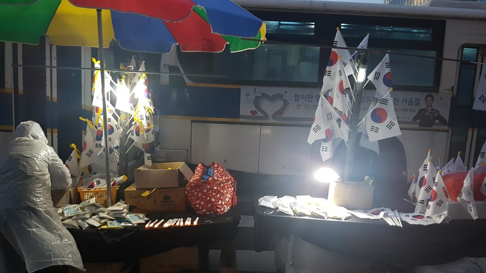

광장에 나가다.
2017년 03월 01일
휴직 23일째
광장에 나가다.
백수가 된 뒤로 시간이 많았으나 이래저래 핑계를 대며 집회에 참석하지 못했었다. 오늘 3.1절 드디어 촛불을 들고 광장으로 나갔다. 마침 친구가 같이 가자고 해서 나갈 수 있게 되었다.
집회는 이제 시민들의 축제라고 생각한다. 이번 사태 이후로 광장에 한번이라도 나왔던 사람들은 느낄것이다. 예전 시위의 무거운 분위기가 아니다. 즐거운 축제의 거리처럼 느껴진다. 예전 백남기 농민께서 쓰러진 바로 다음 집회를 홧김에 참석했었는데 그당시 분위기만 해도 이렇지 않았다. 수많은 깃발들과 구호들이 나같이 시위 문화를 별로 접해보지 못한 세대에게 거부감을 들게 했었다. 그러나 이제는 어떤 특정단체의 구호들과 머릿띠 등은 보기 어렵다. 재미있는 깃발이나 코스프레를 볼 수 있다. 부족한 빈자리는 젊은이들과 어린이가 포함된 가족, 연인들이 채웠다. 아주 긍정적인 일이다.
경복궁역 6번 출구로 나왔다. 사람들이 많고 시끄웠다. 그리고 나는 충격을 받았다. 그 말로만 듣던 극우 단체, 일명 태극기 부대 사람들이 생각했던것 보다 엄청나게 많았기 때문이다. 얼핏보기에 촛불집에에 나온 사람들보다 더 많은 수가 있는것 처럼 보였다. 경찰차 벽으로 나뉜 하나의 공간에서 두 목소리가 섞이고 있었다. 도데체 우리나라가 왜 이렇게 된 걸까. 어째서 대한민국은 남/북이 아닌 하나의 나라 안에서도 둘로 나뉘어있는 걸까. 안타까웠다. 태극기를 판매하는 하나의 좌판에 한쪽은 그냥 태극기 한쪽은 노란 리본이 묶인 태극기를 팔고 있었다. 씁슬했다. 오늘의 상황을 상징적으로 잘 표현한 장면이었다. 하나의 좌판에 동일한 태극기를 구분해서 팔고 있는것. 많은 생각을 하게 한 장면 이었다.

태극기 집회에 나오는 어르신들께 깊은 연민의 감정을 느낀다. 이념의 피해자이다. 희미 하게나마 전쟁의 기억이 남아 있는 분들이기에 최대한 이해 하려고 노력한다. 그렇지만 그런 그들을 정치적으로 이용해 먹는 배후 세력들은 정말 용서할 수 없다. 그들을 선동해 사고를 한쪽으로 몰고 간다. 진보는 온통 종북 빨갱이 간첩이라고 밖에 생각하지 않게 말이다. 미디어나 정치적 프레임을 옳은것에 사용하지 않고, 오직 정권을 잡고 기득권을 얻기 위한 수단으로만 사용하는 나쁜놈들이다. 지금 이 국정농단 사태는 좌우 이념의 문제가 아니라 이 사회의 정의 문제이지 않은가?
시간이 지나고 어두워지자 태극기 집회 참가자들은 모두 퇴근한 듯했다. 이제 광화문에는 촛불만이 켜졌다. 그동안 집회에 왔을때는 돌아다니며 먹고 놀기만 했었는데 오늘은 진지하게 참여하고 싶었다. 청와대나 헌재로 행진 해보고 싶었는데 한번도 못해봤었다. 다행이 단체로 청와대로 행진하게 되었다. 비가 점점 많이 내렸다. 우비도 없이 불편한 몸을 이끌고 참석하신 어르신도 있었다. 숙연해진다. 어른이라고 다 같은 어른은 아니라는 생각이 든다. 사람들이 떠나고 남은 자리는 무척 깨끗했다. 사람들은 행진을 시작할때 바닥에 있던 모든 쓰레기를 치웠기 때문이다. 청와대 앞에서 수많은 시민들이 외치는데 그 안에있는 사람은 어떤 생각이 들까? 아무렇지도 않다면 그게 인간인가? 청와대로 행진하면서 많은 생각이 들었다.
강남순 교수의 정의를 위하여에서, 글쓰기라는 행위는 어떠한 글이든 글로써 이 세계에 개입하는 것이라는 구절이 있다. 그 말이 무척이나 인상 깊었는지 자주 떠오른다. 어떤 행위로 이 세계에 개입하는것, 정말 멋진일 아닌가? 글 뿐만이 아니라 내가 하는 모든 행위는 어떻게든 이 세계에 개입하는 행위이다. 지인, 가족, 지역공동체서 부터 우주 전체에 까지 매우 미미하지만 이 세계에 영향을 미친다. 촛불 하나를 손에 들고 수많은 사람들이 모인 광장에 나가는것 자체만으로도 역사에 개입하여 작은 한 부분을 채우는 행위다.
우리나라는 진보하고 있는가? 퇴보하고 있는가? 역사에서 진보한다는 것은 무엇일까? 역사라는것이 진보하긴 하는건가? E.H.카는 역사란 무엇인가에서 이렇게 말한다. 획득된 형질이 한 세대에서 다음 세대로 전승될 때 역사는 진보한다고. 그러나 그것을 진보라고 하는것은 결국 역사가의 해석이라고. 여기서 말하는 역사가는 역사를 연구하는 학자라기 보다는 현재를 살아가고 역사의 한 맥락에 서있는 나 자신을 의미 한다고 생각한다.
시민의 권리와 민주주의를 회복하기 위해서 그리고 이 사회의 부정부패를 척결하기 위해서 우리 국민들은 길고 멋진 싸움을 하고있다. 우리는 어떤 역사적 법칙이나 진보라는 가설을 실현 시키려고 의식적으로 노력하고 있는 것은 아니다. 이 싸움을 역사의 진보라고 해석하는 사람은 결국 역사가이다. 즉 나 자신인 것이다. 한동안 퇴보하고 있던 역사의 시계바늘이 이제야 비로소 진보하는 쪽으로 방향을 틀었다. 그것도 소수의 엘리트 기득권이 아닌 다수의 평범한 시민들이 직접 해낸 일이다. 나는 지금 우리 사회가 진보하고 있다고 해석한다. 지금 이 순간 역사의 한 가운데 서 있고, 작은 보탬이나마 그것을 직접 진보하는 것으로 만들어가고 있다는 사실에 가슴이 뜨거워지는 하루였다.